KIKI / REFINEMENT CANDIDATES
材质更自然，
细节还需对齐。
这一轮尝试移除压纹，并把模糊设定长图重排成三张。重绘改善了毛绒感，但也改变了部分比例、道具和 Logo，所以这些候选图尚未覆盖正式页面。点击图片可查看全尺寸。
01 / 设定长图 → 三张展板
角色介绍、故事背景、造型与材质。已放大文字和图像；字标及角色细节待统一，保留为候选。
喝咖啡
绒毛更自然；杯子材质和手脚细节改变，未替换原图。
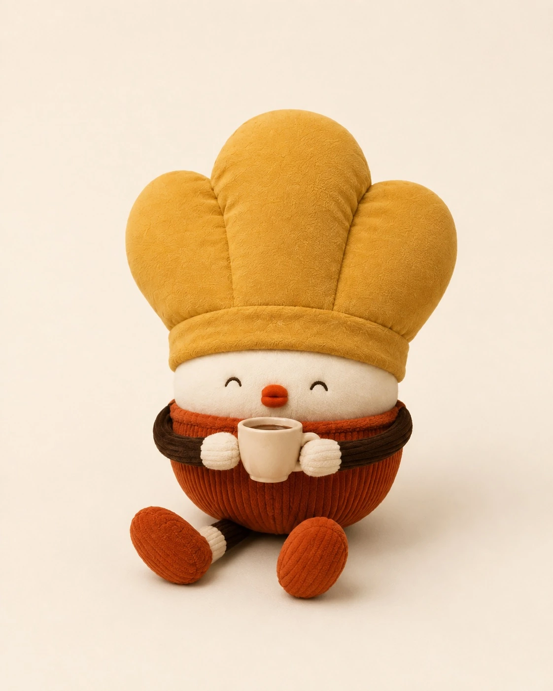
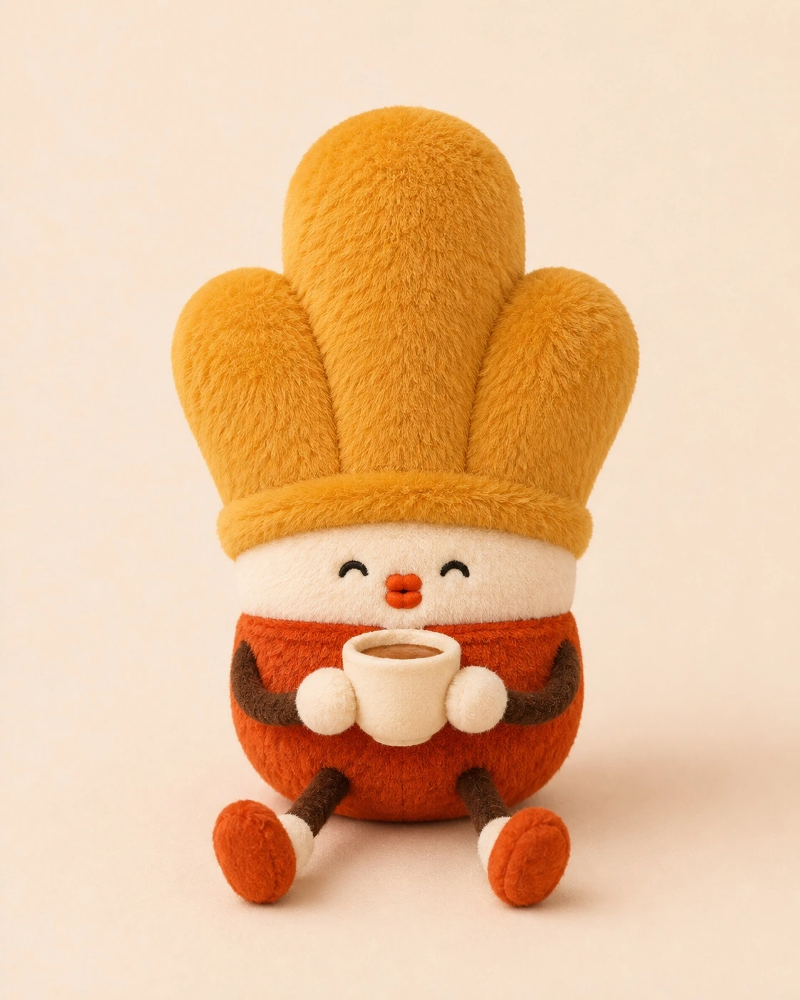
吃可颂
绒毛更自然；五官、面包和身体细节仍需对齐。
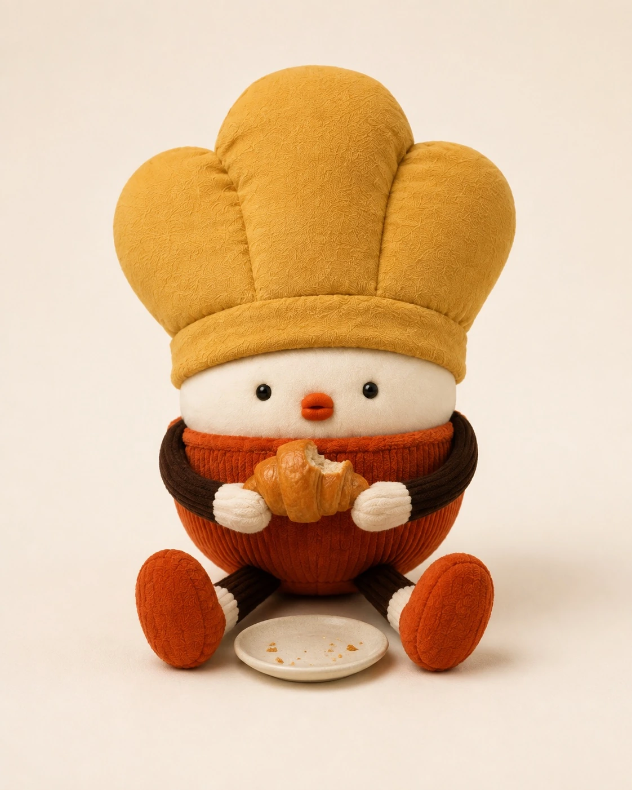
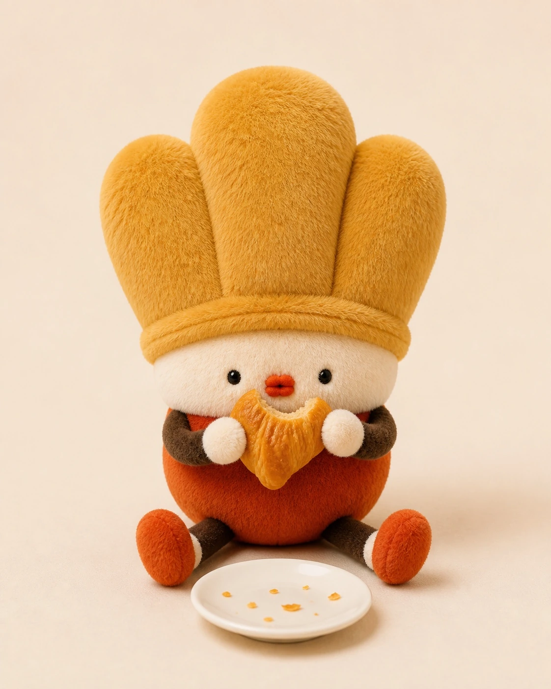
咖啡店场景
重新制作的候选图仍有比例差异。正式页面已恢复原版，保留原构图。

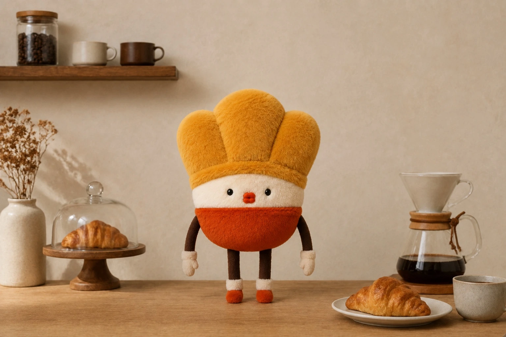
咖啡包装
材质候选；物件构图和字标与原稿有差异，未替换。

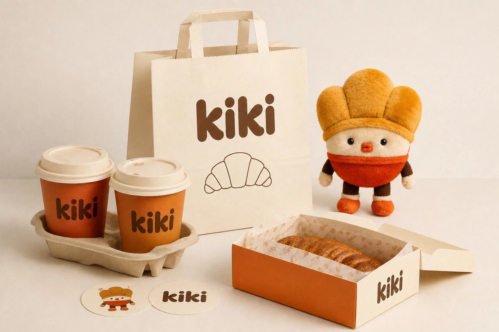
礼盒
材质候选；盒子角度、角色细节及字标仍需统一，未替换。
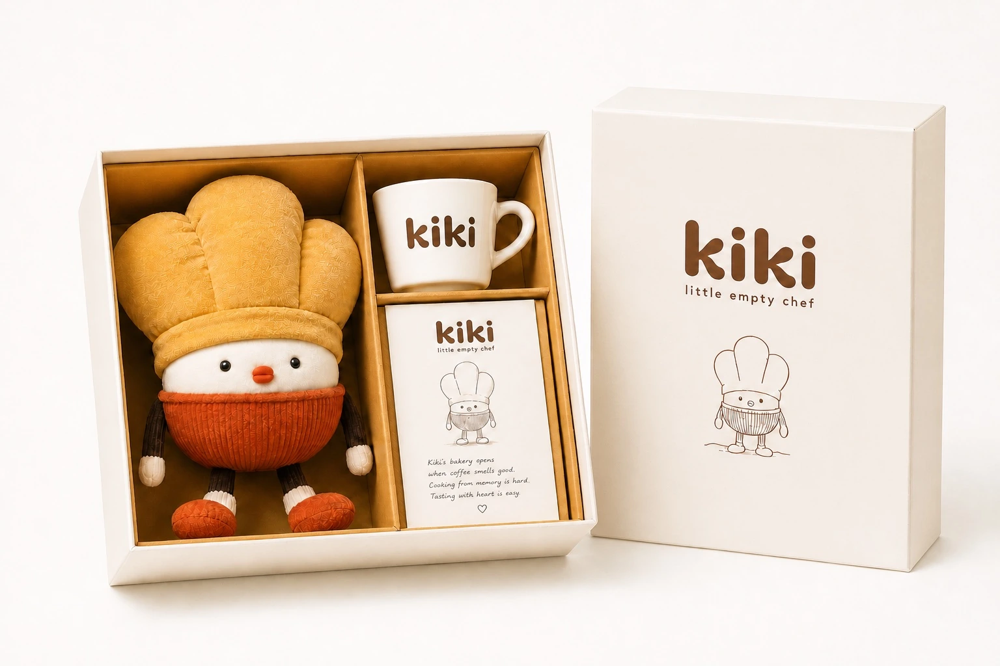
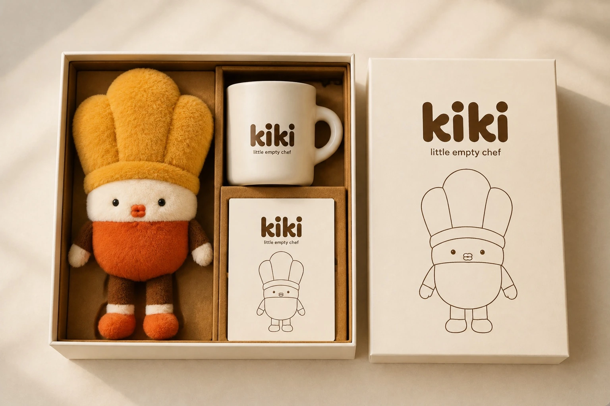
日常周边
五处字标仍未与原 Logo 精确一致，插画也发生变化，未替换。
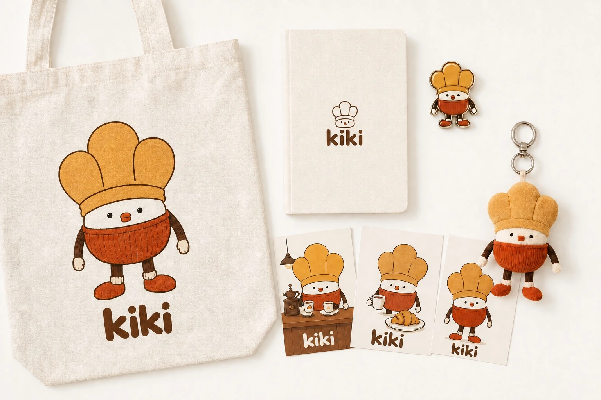
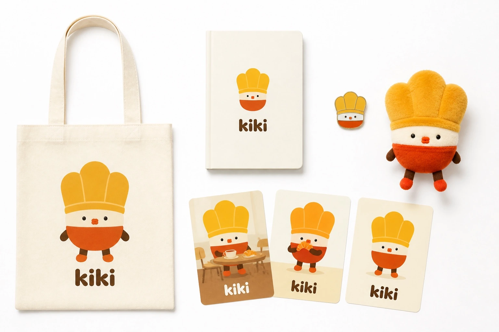
需要精确使用的原 Logo
原字标是自定义形状，不应被普通字体或生成近似字形替代。
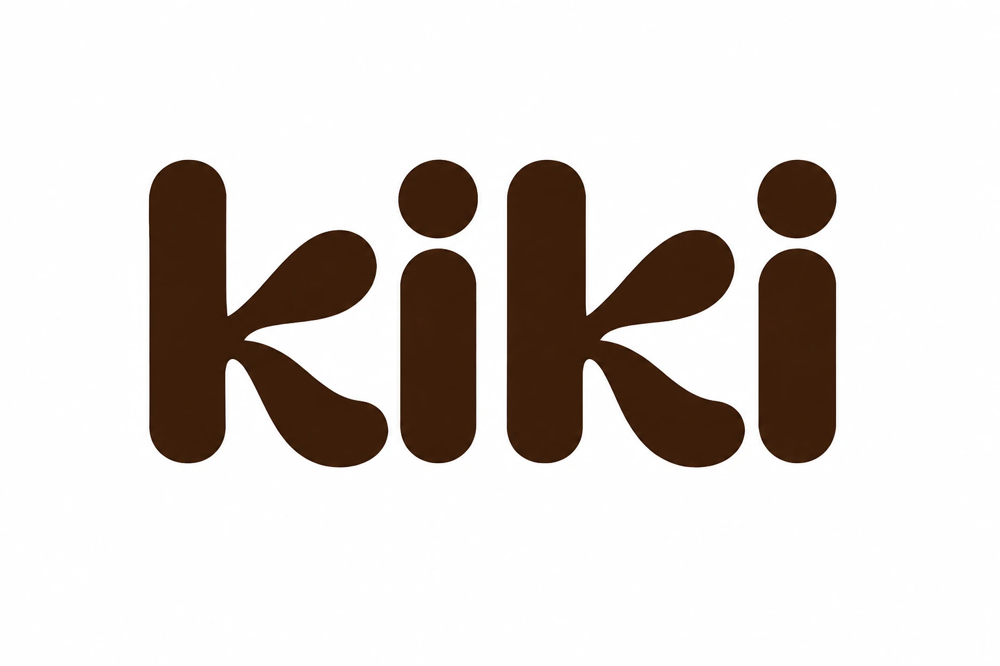